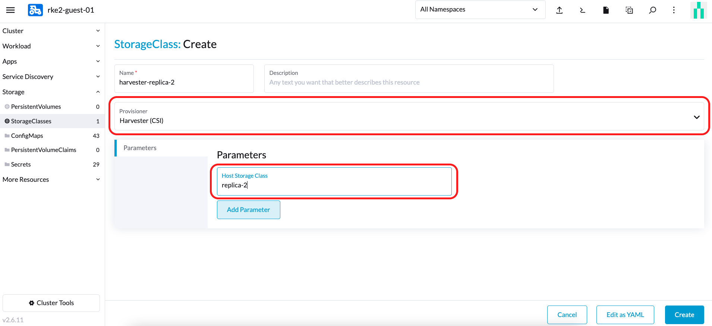
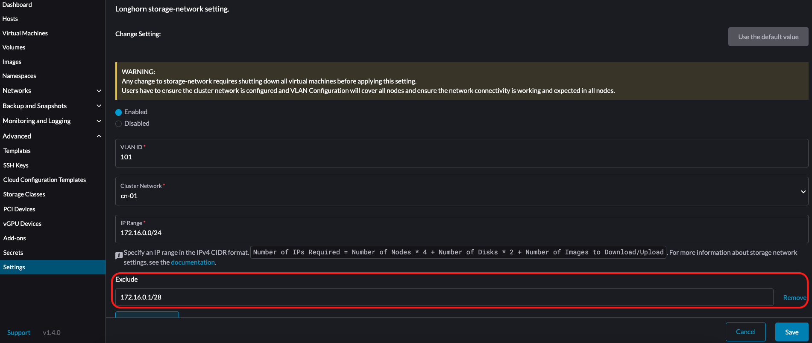
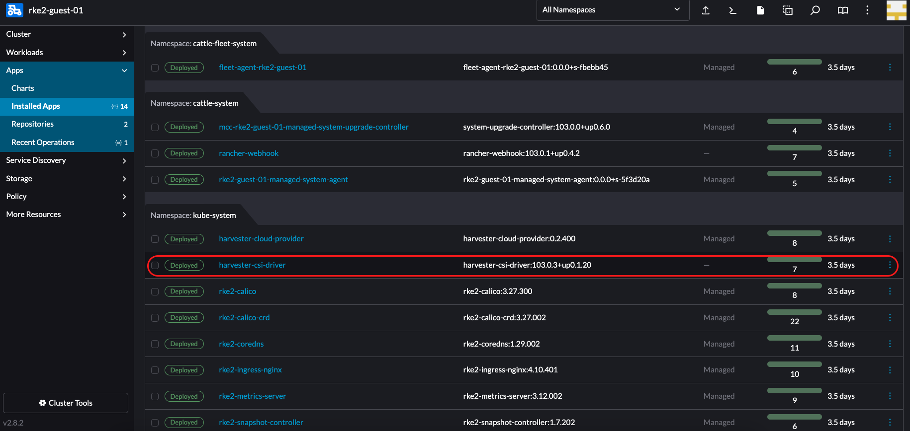
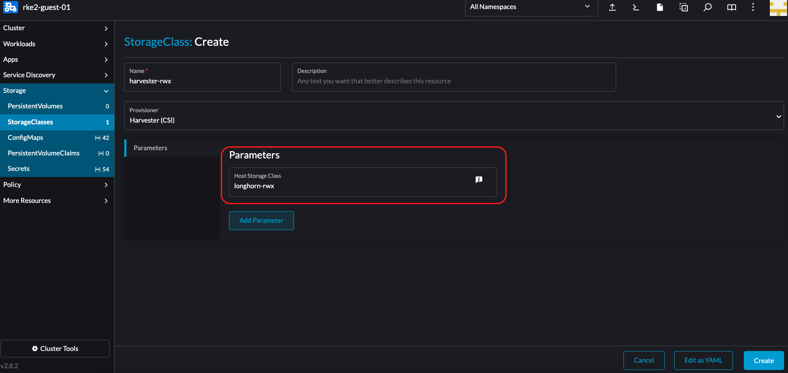
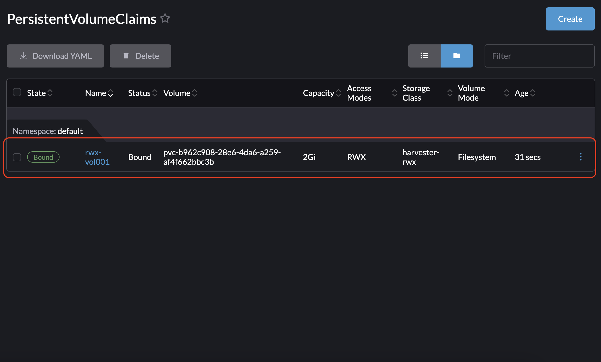
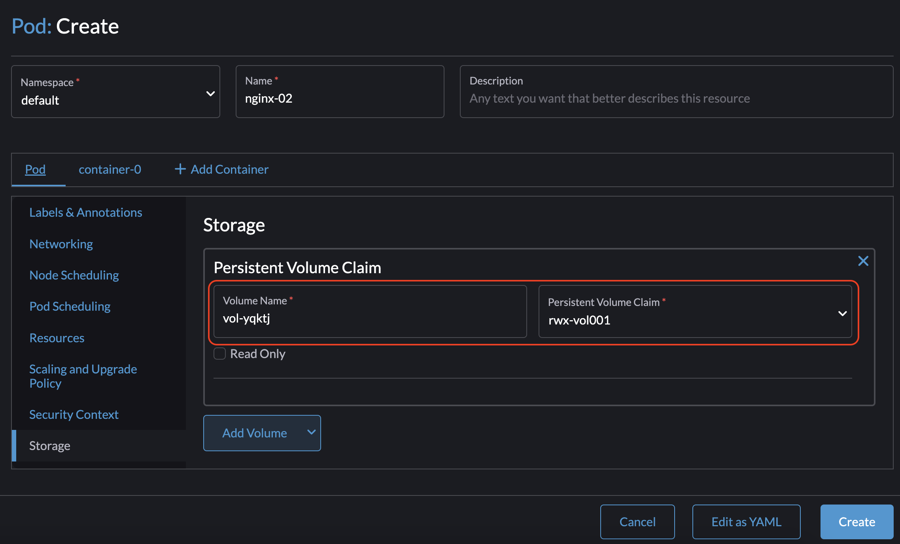

Controlador CSI de Harvester
El controlador de la interfaz de almacenamiento de contenedores (CSI) de Harvester proporciona una interfaz CSI estándar utilizada por los clústeres de Kubernetes invitados. Se conecta al clúster host y conecta en caliente los volúmenes del host a las máquinas virtuales para proporcionar un rendimiento de almacenamiento nativo.
El controlador CSI de Harvester admite las siguientes características:
| Versión del controlador CSI de Harvester | SUSE Virtualization Versión | Jerarquización de almacenamiento | Volúmenes RWX | Redimensionamiento en línea | Almacenamiento de terceros | Instantáneas de volúmenes |
|---|---|---|---|---|---|---|
0.1.15 |
Todas las versiones |
✔ |
✖ |
✖ |
✖ |
✖ |
0.1.20 |
v1.4 y posteriores |
✔ |
✔ |
✖ |
✖ |
✖ |
0.1.24 |
v1.6 y posteriores |
✔ |
✔ |
✔ |
✔ |
✖ |
0.1.25 |
v1.7 y posteriores |
✔ |
✔ |
✔ |
✔ |
✔ |
|
Un problema conocido en v0.1.20 del controlador CSI de Harvester provoca que los volúmenes se queden atascados cuando el clúster host está ejecutando una SUSE Virtualization versión que fue lanzada antes de v1.4.0. Este problema se solucionó en v0.1.21. Si tu sistema se ve afectado, puedes seguir la solución alternativa sugerida.
|
Desplegando
Requisitos previos
-
El clúster de Kubernetes se construye sobre SUSE Virtualization máquinas virtuales.
-
Las SUSE Virtualization máquinas virtuales que funcionan como nodos de Kubernetes invitados están en el mismo espacio de nombres.
|
Actualmente, el controlador CSI de Harvester solo admite volúmenes de lectura-escritura (RWO) de un solo nodo. Consulta issue #1992 para obtener información sobre el posible soporte de volúmenes de solo lectura (ROX) y lectura-escritura (RWX) en varios nodos. |
Desplegando con el controlador de nodo RKE2 de Harvester
Al crear un clúster de Kubernetes utilizando el controlador de nodo RKE2 de Rancher, el controlador CSI de Harvester se desplegará automáticamente cuando se seleccione el proveedor de nube de Harvester.

Instalar el controlador CSI manualmente en el clúster RKE2
Si prefieres instalar el controlador CSI de Harvester sin habilitar el proveedor de nube de Harvester, puedes consultar los siguientes pasos:
Requisitos previos de la instalación manual
Asegúrate de tener los siguientes requisitos previos:
-
Tienes
kubectlyjqinstalados en tu sistema. -
Tienes el archivo
kubeconfigpara tu clúster de Harvester en equipo sin sistema operativo. Puedes encontrar el archivokubeconfigen uno de los nodos de gestión de Harvester en la vía/etc/rancher/rke2/rke2.yaml.export KUBECONFIG=/path/to/your/harvester-kubeconfig
Realiza los siguientes pasos para desplegar manualmente el controlador CSI de Harvester:
Desplegar el controlador CSI de Harvester
-
Genera el
cloud-config. Puedes generar el archivocloud-configutilizando el script generate_addon_csi.sh. Está disponible en el repositorio harvester/harvester-csi-driver.<serviceaccount name>generalmente corresponde al nombre de tu clúster invitado, y<namespace>debe coincidir con el espacio de nombres del grupo de máquinas../generate_addon_csi.sh <serviceaccount name> <namespace> RKE2
La salida generada será similar a la siguiente:
########## cloud-config ############ apiVersion: v1 clusters: - cluster: <token> server: https://<YOUR HOST HARVESTER VIP>:6443 name: default contexts: - context: cluster: default namespace: default user: rke2-guest-01-default-default name: rke2-guest-01-default-default current-context: rke2-guest-01-default-default kind: Config preferences: {} users: - name: rke2-guest-01-default-default user: token: <token> ########## cloud-init user data ############ write_files: - encoding: b64 content: YXBpVmVyc2lvbjogdjEKY2x1c3RlcnM6Ci0gY2x1c3RlcjoKICAgIGNlcnRpZmljYXRlLWF1dGhvcml0eS1kYXRhOiBMUzB0TFMxQ1JVZEpUaUJEUlZKVVNVWkpRMEZVUlMwdExTMHRDazFKU1VKbFZFTkRRVklyWjBGM1NVSkJaMGxDUVVSQlMwSm5aM0ZvYTJwUFVGRlJSRUZxUVd0TlUwbDNTVUZaUkZaUlVVUkVRbXg1WVRKVmVVeFlUbXdLWTI1YWJHTnBNV3BaVlVGNFRtcG5NVTE2VlhoT1JGRjNUVUkwV0VSVVNYcE5SRlY1VDFSQk5VMVVRVEJOUm05WVJGUk5lazFFVlhsT2FrRTFUVlJCTUFwTlJtOTNTa1JGYVUxRFFVZEJNVlZGUVhkM1dtTnRkR3hOYVRGNldsaEtNbHBZU1hSWk1rWkJUVlJaTkU1VVRURk5WRkV3VFVSQ1drMUNUVWRDZVhGSENsTk5ORGxCWjBWSFEwTnhSMU5OTkRsQmQwVklRVEJKUVVKSmQzRmFZMDVTVjBWU2FsQlVkalJsTUhFMk0ySmxTSEZEZDFWelducGtRa3BsU0VWbFpHTUtOVEJaUTNKTFNISklhbWdyTDJab2VXUklNME5ZVURNeFZXMWxTM1ZaVDBsVGRIVnZVbGx4YVdJMGFFZE5aekpxVVdwQ1FVMUJORWRCTVZWa1JIZEZRZ292ZDFGRlFYZEpRM0JFUVZCQ1owNVdTRkpOUWtGbU9FVkNWRUZFUVZGSUwwMUNNRWRCTVZWa1JHZFJWMEpDVWpaRGEzbEJOSEZqYldKSlVESlFWVW81Q2xacWJWVTNVV2R2WjJwQlMwSm5aM0ZvYTJwUFVGRlJSRUZuVGtsQlJFSkdRV2xCZUZKNU4xUTNRMVpEYVZWTVdFMDRZazVaVWtWek1HSnBZbWxVSzJzS1kwRnhlVmt5Tm5CaGMwcHpMM2RKYUVGTVNsQnFVVzVxZEcwMVptNTZWR3AxUVVsblRuTkdibFozWkZRMldXWXpieTg0ZFRsS05tMWhSR2RXQ2kwdExTMHRSVTVFSUVORlVsUkpSa2xEUVZSRkxTMHRMUzBLCiAgICBzZXJ2ZXI6IGh0dHBzOi8vMTkyLjE2OC4wLjEzMTo2NDQzCiAgbmFtZTogZGVmYXVsdApjb250ZXh0czoKLSBjb250ZXh0OgogICAgY2x1c3RlcjogZGVmYXVsdAogICAgbmFtZXNwYWNlOiBkZWZhdWx0CiAgICB1c2VyOiBya2UyLWd1ZXN0LTAxLWRlZmF1bHQtZGVmYXVsdAogIG5hbWU6IHJrZTItZ3Vlc3QtMDEtZGVmYXVsdC1kZWZhdWx0CmN1cnJlbnQtY29udGV4dDogcmtlMi1ndWVzdC0wMS1kZWZhdWx0LWRlZmF1bHQKa2luZDogQ29uZmlnCnByZWZlcmVuY2VzOiB7fQp1c2VyczoKLSBuYW1lOiBya2UyLWd1ZXN0LTAxLWRlZmF1bHQtZGVmYXVsdAogIHVzZXI6CiAgICB0b2tlbjogZXlKaGJHY2lPaUpTVXpJMU5pSXNJbXRwWkNJNklreGhUazQxUTBsMWFsTnRORE5TVFZKS00waE9UbGszTkV0amNVeEtjM1JSV1RoYVpUbGZVazA0YW1zaWZRLmV5SnBjM01pT2lKcmRXSmxjbTVsZEdWekwzTmxjblpwWTJWaFkyTnZkVzUwSWl3aWEzVmlaWEp1WlhSbGN5NXBieTl6WlhKMmFXTmxZV05qYjNWdWRDOXVZVzFsYzNCaFkyVWlPaUprWldaaGRXeDBJaXdpYTNWaVpYSnVaWFJsY3k1cGJ5OXpaWEoyYVdObFlXTmpiM1Z1ZEM5elpXTnlaWFF1Ym1GdFpTSTZJbkpyWlRJdFozVmxjM1F0TURFdGRHOXJaVzRpTENKcmRXSmxjbTVsZEdWekxtbHZMM05sY25acFkyVmhZMk52ZFc1MEwzTmxjblpwWTJVdFlXTmpiM1Z1ZEM1dVlXMWxJam9pY210bE1pMW5kV1Z6ZEMwd01TSXNJbXQxWW1WeWJtVjBaWE11YVc4dmMyVnlkbWxqWldGalkyOTFiblF2YzJWeWRtbGpaUzFoWTJOdmRXNTBMblZwWkNJNkltTXlZak5sTldGaExUWTBNMlF0TkRkbU1pMDROemt3TFRjeU5qWXpNbVl4Wm1aaU5pSXNJbk4xWWlJNkluTjVjM1JsYlRwelpYSjJhV05sWVdOamIzVnVkRHBrWldaaGRXeDBPbkpyWlRJdFozVmxjM1F0TURFaWZRLmFRZmU1d19ERFRsSWJMYnUzWUVFY3hmR29INGY1VnhVdmpaajJDaWlhcXB6VWI0dUYwLUR0cnRsa3JUM19ZemdXbENRVVVUNzNja1BuQmdTZ2FWNDhhdmlfSjJvdUFVZC04djN5d3M0eXpjLVFsTVV0MV9ScGJkUURzXzd6SDVYeUVIREJ1dVNkaTVrRWMweHk0X0tDQ2IwRHQ0OGFoSVhnNlMwRDdJUzFfVkR3MmdEa24wcDVXUnFFd0xmSjdEbHJDOFEzRkNUdGhpUkVHZkUzcmJGYUdOMjdfamR2cUo4WXlJQVd4RHAtVHVNT1pKZUNObXRtUzVvQXpIN3hOZlhRTlZ2ZU05X29tX3FaVnhuTzFEanllbWdvNG9OSEpzekp1VWliRGxxTVZiMS1oQUxYSjZXR1Z2RURxSTlna1JlSWtkX3JqS2tyY3lYaGhaN3lTZ3o3QQo= owner: root:root path: /var/lib/rancher/rke2/etc/config-files/cloud-provider-config permissions: '0644' -
Copia y pega el contenido de
cloud-init user dataen Machine Pools > Show Advanced > User Data.
El archivo
cloud-provider-configse creará después de que apliques los datos de usuario de cloud-init anteriores. Puedes encontrarlo en los nodos de Kubernetes invitados en la vía/var/lib/rancher/rke2/etc/config-files/cloud-provider-config. -
Configura el Cloud Provider ya sea a Default - RKE2 Embedded o External.

-
Selecciona Create para crear tu clúster RKE2.
-
Una vez que el clúster RKE2 esté listo, instala el chart del Harvester CSI Driver desde el mercado de Rancher. No necesitas cambiar la ruta del cloud-config por defecto.


|
Si prefieres no instalar el controlador CSI de Harvester utilizando Rancher (Apps > Charts), puedes usar Helm en su lugar. El controlador CSI de Harvester está empaquetado como un chart de Helm. Para obtener más información, consulte la https://charts.harvesterhci.io. |
Siguiendo los pasos anteriores, deberías poder ver que esos pods del controlador CSI están en funcionamiento en el espacio de nombres kube-system, y puedes verificarlo aprovisionando un nuevo PVC utilizando el StorageClass por defecto harvester en tu clúster RKE2.
Desplegando con el controlador de nodo K3s de Harvester
Puedes seguir los pasos [Deploy Harvester CSI driver] descritos en la sección de RKE2.
La única diferencia está en generar la configuración de cloud-init donde necesitas especificar el tipo de proveedor como k3s:
./generate_addon_csi.sh <serviceaccount name> <namespace> k3sPersonaliza el StorageClass predeterminado
El controlador CSI de Harvester proporciona la interfaz para definir el StorageClass predeterminado. Si no se especifica el StorageClass predeterminado, el controlador CSI de Harvester utiliza el StorageClass predeterminado del clúster Harvester anfitrión.
Puedes usar el parámetro host-storage-class para personalizar el StorageClass predeterminado.
-
Crea un StorageClass para el clúster Harvester anfitrión.
Ejemplo:

-
Despliega el controlador CSI con el parámetro
host-storage-class.Ejemplo:

-
Verifica que el controlador CSI de Harvester esté listo.
-
En la pantalla PersistentVolumeClaims, crea un PVC. Selecciona Usar un Storage Class para aprovisionar un nuevo Persistent Volume y especifica el StorageClass que creaste.
Ejemplo:

-
Una vez que se crea el PVC, anota el nombre del volumen aprovisionado y verifica que el estado sea Bound.
Ejemplo:

-
En la pantalla Volumes, verifica que el volumen fue aprovisionado utilizando el StorageClass que creaste.
Ejemplo:

-
Passthrough Custom StorageClass
A partir de la versión v0.1.15 del controlador CSI de Harvester, es posible crear un PersistentVolumeClaim (PVC) utilizando un StorageClass de Harvester diferente en el clúster Kubernetes invitado.
|
Un controlador CSI de Harvester compatible está integrado en cada versión de RKE2 soportada. |
Requisitos previos
Agrega los siguientes requisitos previos a tu clúster Harvester para asegurar que el controlador CSI de Harvester muestre los mensajes de error correctamente. Los ajustes adecuados de RBAC son esenciales para la visibilidad de los mensajes de error, especialmente al crear un PVC con un StorageClass que no existe, como se muestra en la imagen a continuación:

Sigue estos pasos para configurar RBAC para la visibilidad de los mensajes de error:
-
Crea un nuevo
clusterrolellamadoharvesterhci.io:csi-driverutilizando el siguiente manifiesto.apiVersion: rbac.authorization.k8s.io/v1 kind: ClusterRole metadata: labels: app.kubernetes.io/component: apiserver app.kubernetes.io/name: harvester app.kubernetes.io/part-of: harvester name: harvesterhci.io:csi-driver rules: - apiGroups: - storage.k8s.io resources: - storageclasses verbs: - get - list - watch -
Crea un nuevo
clusterrolebindingasociado con elclusterroleanterior con elserviceaccountrelevante utilizando el siguiente manifiesto.apiVersion: rbac.authorization.k8s.io/v1 kind: ClusterRoleBinding metadata: name: <namespace>-<serviceaccount name> roleRef: apiGroup: rbac.authorization.k8s.io kind: ClusterRole name: harvesterhci.io:csi-driver subjects: - kind: ServiceAccount name: <serviceaccount name> namespace: <namespace>
Asegúrate de que
serviceaccount nameynamespacecoincidan con la configuración de tu proveedor de nube. Realiza los siguientes pasos para recuperar estos detalles.-
Encuentra el
rolebindingasociado con tu proveedor de nube:$ kubectl get rolebinding -A |grep harvesterhci.io:cloudprovider default default-rke2-guest-01 ClusterRole/harvesterhci.io:cloudprovider 7d1h
-
Extrae la información de
subjectsde esterolebinding:$ kubectl get rolebinding default-rke2-guest-01 -n default -o yaml |yq -e '.subjects'
-
Identifica la información de
ServiceAccount:- kind: ServiceAccount name: rke2-guest-01 namespace: default
-
Desplegando
Ahora puedes crear un nuevo StorageClass que pretendes usar en tu clúster de Kubernetes invitado.
-
Para los administradores, puedes crear un StorageClass deseado (por ejemplo, llamado replica-2) en tu clúster Harvester en equipo sin sistema operativo.

-
Luego, en el clúster de Kubernetes invitado, crea un nuevo StorageClass asociado con el StorageClass llamado replica-2 del clúster Harvester:

-
Al elegir un Provisioner, selecciona Harvester (CSI). El parámetro Host StorageClass debe coincidir con el nombre del StorageClass creado en el clúster Harvester.
-
Para los propietarios de Kubernetes invitados, puedes solicitar que el administrador del clúster Harvester cree un nuevo StorageClass.
-
Si dejas el campo
Host StorageClassvacío, se utilizará el StorageClass predeterminado del clúster Harvester.
-
-
Ahora puedes crear un PVC basado en este nuevo StorageClass, que utiliza el Host StorageClass para aprovisionar volúmenes en el clúster Harvester en equipo sin sistema operativo.
Soporte para volúmenes RWX
|
Los volúmenes RWX actualmente solo funcionan con una red de almacenamiento dedicada. Issue #7218 rastrea la mejora que permitirá a los volúmenes RWX usar varias VLAN en clústeres invitados. |
Requisitos previos
-
Harvester v1.4 o posterior está instalado en el clúster host.
-
Se ha configurado una red de almacenamiento en el clúster Harvester.
Usa excluir para reservar un rango de direcciones IP para las máquinas virtuales del clúster invitado.

-
La configuración de Red de Almacenamiento para Volumen RWX en la interfaz de usuario de Longhorn integrada está habilitada.
Ve a General, y luego selecciona Red de Almacenamiento para Volumen RWX Habilitado.

-
Has creado una StorageClass RWX en el clúster Harvester del host.
En la Clase de Almacenamiento: En la pantalla de Crear, haz clic en Editar como YAML y especifica lo siguiente:
kind: StorageClass apiVersion: storage.k8s.io/v1 metadata: name: longhorn-rwx provisioner: driver.longhorn.io allowVolumeExpansion: true reclaimPolicy: Delete volumeBindingMode: Immediate parameters: numberOfReplicas: "3" staleReplicaTimeout: "2880" fromBackup: "" fsType: "ext4" nfsOptions: "vers=4.2,noresvport,softerr,timeo=600,retrans=5"


-
Los ajustes de control de acceso basado en funciones (RBAC) están actualizados.
La autorización RBAC utiliza un grupo de API específico de Kubernetes para tomar decisiones de autorización sobre el acceso a recursos informáticos o de red.
El controlador CSI de Harvester requiere los nuevos ajustes de RBAC para soportar volúmenes RWX. Para comprobar los ajustes de RBAC, ejecuta el comando
kubectl get clusterrole harvesterhci.io:csi-driver -o yaml.# kubectl get clusterrole harvesterhci.io:csi-driver -o yaml apiVersion: rbac.authorization.k8s.io/v1 kind: ClusterRole metadata: ... name: harvesterhci.io:csi-driver ... rules: - apiGroups: - storage.k8s.io resources: - storageclasses verbs: - get - list - watch - apiGroups: - harvesterhci.io resources: - networkfilesystems - networkfilesystems/status verbs: - '*' - apiGroups: - longhorn.io resources: - volumes - volumes/status verbs: - get - list -
Los pods de networkfs-manager están en ejecución.
Para comprobar el estado de los pods de networkfs-manager, ejecuta el comando
kubectl get pods -n harvester-system | grep networkfs-manager.Ejemplo:
# kubectl get pods -n harvester-system | grep networkfs-manager harvester-networkfs-manager-2pxhm 1/1 Running 4 (34m ago) 3h41m harvester-networkfs-manager-8tst2 1/1 Running 4 (37m ago) 3h41m harvester-networkfs-manager-xvkgp 1/1 Running 4 (37m ago) 3h41m -
La versión del controlador CSI de Harvester es v0.1.20 o posterior.

-
La máquina virtual tiene dos interfaces de red: una interfaz de red predeterminada para comunicaciones intra-clúster y que permite el acceso desde la red de infraestructura (externa al clúster Harvester); y una red que puede conectarse a la red de almacenamiento.
El NAD default/vlan101 se utiliza para la red de almacenamiento.

-
El cliente NFS está instalado en cada nodo del clúster invitado.
Ejecuta cualquiera de los siguientes comandos para instalar el cliente NFS.
-
Debian y Ubuntu:
apt-get install -y nfs-common -
CentOS y RHEL:
yum install -y nfs-utils -
SUSE y OpenSUSE:
zypper install -y nfs-client
-
-
Se asigna manualmente una IP a la interfaz de red de almacenamiento.
Puedes asignar cualquiera de las IPs reservadas utilizando los siguientes comandos:
$ ip link set <storage network nic> up $ ip a add <reserved IP> dev <storage network nic>
Una IP que se asigna utilizando los comandos dados no persiste después de un reinicio. Para hacer que la IP sea persistente, debes añadirla al archivo de configuración de red de tu sistema operativo invitado.
Uso
-
Crea una nueva StorageClass en el clúster invitado.
En el StorageClass: En la pantalla de crear, añade un parámetro Clase de Almacenamiento de Host y especifica la StorageClass RWX que creaste en el clúster Harvester del host.

-
Crea un PersistentVolumeClaim (PVC) RWX.
En el PersistentVolumeClaim: En la pantalla de crear, configura los siguientes ajustes:
-
Pestaña Reclamación de Volumen: Especifica la nueva StorageClass.

-
Pestaña Personalizar: Selecciona Muchos Nodos Lectura-escritura.

-
-
Verifica que el PVC RWX se haya creado correctamente.

-
Crea dos pods.
En el Pod: En la pantalla de crear, especifica el PVC RWX.



|
Puedes seguir los mismos pasos para crear un PVC RWX en el clúster invitado y luego usarlo en pods que requieran volúmenes RWX. |
Redimensionamiento de volúmenes en línea
Si el proveedor de almacenamiento subyacente admite expansión de volumen en línea, puedes expandir un volumen ReadWriteOnce (RWO) en el clúster invitado incluso mientras está adjunto a una carga de trabajo en ejecución.
Instantáneas de volúmenes
A partir de v0.1.25, el controlador CSI de Harvester admite instantáneas de volumen, proporcionando capacidades de copia de seguridad y restauración en el tiempo para cargas de trabajo que se ejecutan en clústeres de Kubernetes invitados.
Actualiza el controlador CSI
|
El controlador CSI de Harvester admite instantáneas de volumen a partir de la versión v0.1.25. Usar esta función puede requerir pasos adicionales dependiendo de tu distribución de Kubernetes.
|
Actualiza RKE2
Para actualizar el controlador CSI, utiliza la interfaz de usuario de Rancher para actualizar RKE2. Asegúrate de que la nueva versión de RKE2 sea compatible/esté empaquetada con la versión actualizada del controlador CSI.
-
Ve a ☰ > Gestión de Clústeres.
-
Encuentra el clúster invitado que deseas actualizar y selecciona ⋮ > Editar Configuración.
-
Selecciona Versión de Kubernetes.
-
Haz clic en Guardar.